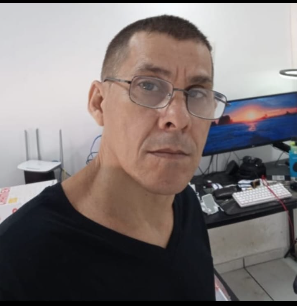

Português: Nativo
Inglês: Intermediário (Leitura técnica, documentação e comunicação básica)
ITECI (1999 - 2000)
Curso de Formação de Programadores
Engenheiro de Software Sênior com mais de 30 anos de sólida experiência no desenvolvimento de sistemas corporativos e de missão crítica. Atuação destacada em arquitetura de microsserviços, integração de sistemas distribuídos e soluções voltadas para o setor financeiro e de pagamentos, gerenciando requisitos complexos de alta disponibilidade, segurança e escalabilidade.
Perfil analítico focado em práticas modernas de engenharia (Clean Code, SOLID, TDD), infraestrutura ágil e esteiras automatizadas, visando sempre a geração de valor real para o negócio.